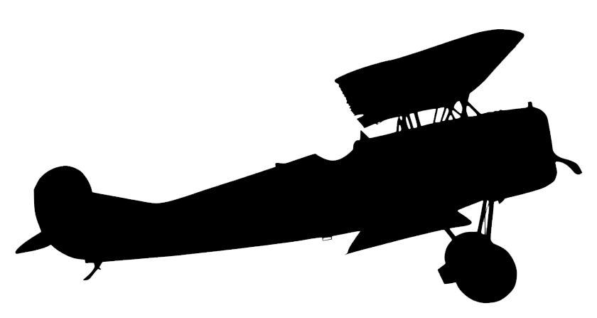

 Vecihi Hurkus

Vecihi Hürkuş’un Hayatı: Vecihi Hürkuş, 18 Ocak 1896 Cumartesi günü (06 Kanunusani 1311) İstanbul’da (Dersaadet) doğdu. Babası İstanbullu bir aileden Gümrük Müfettişi Ali Feham Bey, annesi Vidin’de doğmuş, üç yaşında İstanbul’a gelmiş Zeliha Niyir Hanım‘dır. Üç yaşında iken babası ölmüştür.
İstanbul’a geldiğinde savaşın sonları idi. Başkent İstanbul Hava Müdafaa Bölüğü‘ne tayin oldu. Vecihi Bey İstanbul hava müdafaasına katıldı. İstanbul işgal edilince esaretten dönen askerlerin arasında gizlice Harem’den kalkan bir gemiyle Mudanya’ya, oradan Bursa ve Eskişehir üzerinden Konya’ya giderek Kurtuluş Savaşı’na katılmıştır. Kurtuluş Savaşı’nda Vecihi Hürkuş, “Sivil Pilot”tur. Kurtuluş Savaşı’nın ilk ve son uçuşunu yapan, İzmir / Seydiköy Hava Meydanını işgal eden tayyareci olmuş, TBMM’den üç defa takdirname alarak kırmızı şeritli İstiklal Madalyası kazanmıştır. Kurtuluş savaşı sonrası vatanına hizmet sevdası bitmemiş ve ülkesinde uçak fabrikası kurmak istemiştir.
1925 senesinde yaptığı vecihi kvi için vesika istediğinde, sertifika için bir teknik heyet kurulur, fakat uçağı uçurup deneyecek kimse olmadığı için sertifikayı alamaz ve izinsiz uçar. tabi bunun üzerine cezayı yiyince hava kuvvetlerinden istifa
eder. uçağına da el konur.
1930 yılında kadıköy'de bir keresteci kiralar ve ikinci uçağı vecihi k xiv'ü yapar. bununla ankara'da ismet paşa'nın huzurunda bir gösteri yapar. buna rağmen uçağı onaylatacak kimse olmadığından buna da müsaade çıkmaz. uçağını uçurabilmek
için ta çekoslovakyalardan belge almak zorunda kalır. uçağı bir süre postacılıkta kullanıldıktan sonra uçuştan men edilir.
1933'de 2 tane vecihi k xv ve vecihi k xvi isimli uçakları yapar ve vecihi sivil tayyare okulu öğrencileriyle çalışmalar yapar. bu okul da parasızlıktan ve verilen diplomaların denkliği olmadığından kapanır.
1937'de almanya'da uçak mühendisliği diploması alır. okul 2 senelik olduğu için türkiye'de diploması kabul görmez.
1947'de kanatlılar birliği diye bir dergi çıkarır. onun sonu da diğerleri gibi engellemeyle bitecektir. 1954'te hürkuş havayolları'nı kurar. türk hava yolları'nın kullanmadığı 8 tane uçağı borç harç edinir. thy'nın sefer koymadığı yerlere
seferler düzenler. bazen gazete taşır. sabotajlar yapılır, yine önü kesilmek istenir. nihayetinde elinde bir uçak kalır. onu da mta için maden aramalarında kullanır.
hayatının sonlarında bu uçakların borçları ve faizleri altında iyice ezilir ve 1. dünya savaşı'nda gösterdiği kahramanlıklar dolayısıyla bağlanan maaşına da haciz konur. 1969'da da gata'da sefalet içinde ölür..
vecihi hürkuş, bütün isteği, azimine ve memlekete yaptığı hizmetlere rağmen hayatı boyunca engellenmeye çalışılmış, türkiye büyük bir zeka ve kabiliyetten yoksun bırakılmıştır. kısacası vecihi hürkuş, memleketimizin belki de en az bilinen
ama en büyük ayıplarından birisi olarak tarihteki kayıtlarda yerini almıştır.